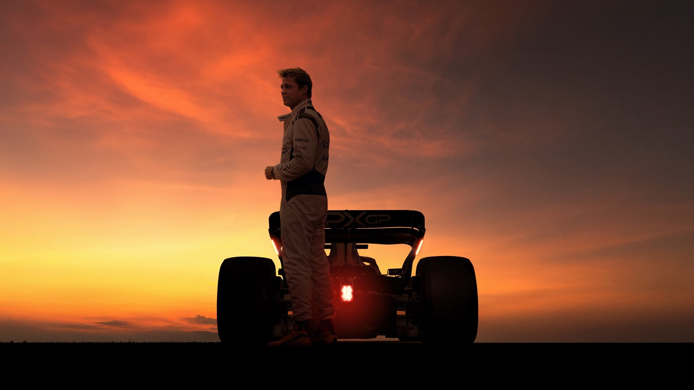
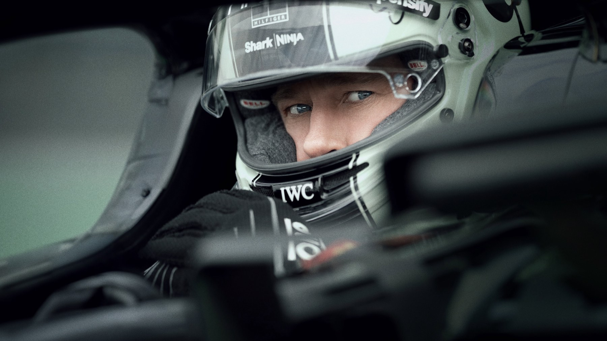
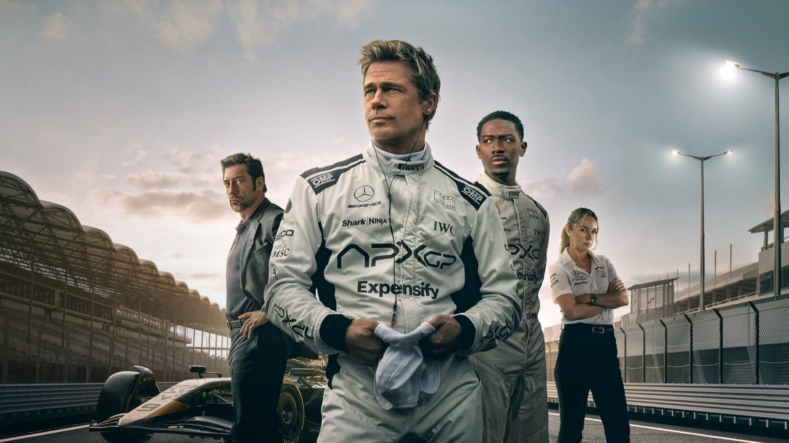

F1
Il regista di Top Gun: Maverick porta Brad Pitt dentro i veri Gran Premi: uno spettacolo a trecento all'ora, prevedibile nella storia ma travolgente in pista
Dopo aver riportato in volo Tom Cruise con Top Gun: Maverick, Joseph Kosinski ci riprova a terra, o meglio a pochi centimetri dall'asfalto. F1, uscito in Italia il 25 giugno 2025 come F1 - Il film, mette Brad Pitt al volante di una monoposto e lo lancia dentro il vero circo della Formula 1, tra circuiti, box e piloti reali. Il risultato è uno dei blockbuster più godibili dell'estate: non un film perfetto, ma un'esperienza che in sala lascia senza fiato.
Di cosa parla F1?
Pitt è Sonny Hayes, un pilota che trent'anni prima sembrava destinato a una grande carriera e che nel film vive di gare minori e lavoretti al volante. A cercarlo è un vecchio compagno di squadra, Ruben Cervantes, interpretato da Javier Bardem, proprietario di una scuderia, la APXGP, che non ha mai vinto e rischia di chiudere. Il piano è semplice e un po' folle: far correre Sonny accanto al giovane talento Joshua Pearce, Damson Idris, per salvare la stagione. Kerry Condon è la direttrice tecnica che deve tenere insieme macchine e caratteri.
La struttura è quella classica del film sportivo, con il veterano e la giovane promessa che si scontrano prima di imparare qualcosa l'uno dall'altro. Nessuna sorpresa, e Kosinski non finge che ce ne siano: la storia è il telaio su cui montare un motore molto potente.

Come sono le scene di gara?
È qui che il film fa la differenza. Molte sequenze sono state girate durante veri weekend di Gran Premio del 2023 e del 2024, con la collaborazione della FIA, e le telecamere montate a bordo, sviluppate apposta da Apple, mettono lo spettatore dentro l'abitacolo come raramente era successo al cinema. Le monoposto vanno davvero veloci, i sorpassi hanno un peso fisico, e il montaggio alterna con intelligenza la pista, il box e la radio di squadra.
Una macchina costruita apposta per il film
Il dettaglio che rende F1 diverso dai film di corse con cui lo si confronta è la sua monoposto. La APXGP non esiste in nessun campionato: è stata ricavata da un telaio Dallara di Formula 2 del 2018, a cui Mercedes Applied Science ha affiancato un pacchetto aerodinamico da Formula 1, e la Carlin Motorsport ne ha costruiti sei esemplari identici. Altri sei telai radiocomandati sono serviti per le scene di incidente. Pitt guida dunque un'auto vera e non un effetto digitale, ed è una delle ragioni per cui i sorpassi hanno quel peso che si sente in sala.
Le riprese sono partite a Silverstone nel luglio 2023, durante il weekend del Gran Premio di Gran Bretagna, e sono proseguite per due stagioni tra Ungheria, Spa, Monza, Zandvoort, Suzuka, Las Vegas e Abu Dhabi. Una scelta che si vede: le tribune piene, i box affollati e le facce dei piloti veri sullo sfondo danno al film una texture che nessun set avrebbe potuto riprodurre.
La colonna sonora di Hans Zimmer spinge tutto ancora più in alto. Su uno schermo IMAX o in una sala con un buon impianto, le gare sono puro spettacolo, e si capisce perché il film abbia convinto anche chi la Formula 1 non la segue.
Brad Pitt e il resto del cast
Pitt regge il film con il carisma di sempre: il suo Sonny è stanco, ironico, un po' superstizioso, e l'attore lo rende simpatico senza bisogno di grandi discorsi. Bardem si diverte nel ruolo dell'amico disperato, Kerry Condon dà spessore a un personaggio che in un film minore sarebbe stato di contorno.
Il punto debole è il rivale più giovane. Elisa Giudici su Gamesurf nota che Damson Idris ha poca presenza scenica, quasi scelto per non oscurare Pitt e i piloti veri: un giudizio severo, ma è vero che il rapporto tra i due protagonisti resta il motore meno potente del film.
La trama la conosci già. Le gare no.
Cosa non funziona
Oltre alla prevedibilità, F1 sceglie lo spettacolo sulla verosimiglianza: chi conosce bene la Formula 1 troverà strategie e incidenti più vicini al mito che alla realtà, e qualche momento in cui il film sembra uno spot molto ben confezionato. La durata, oltre le due ore e mezza, si fa sentire nella parte centrale. Su Rotten Tomatoes ha l'82% di recensioni positive, su Metacritic 68 su 100: un consenso buono, non entusiasta, che ci sembra giusto. Il pubblico americano è stato più generoso: il CinemaScore è una A. E la stampa di settore si è divisa lungo la stessa linea che attraversa il film: da una parte chi ha lodato la resa delle corse, dall'altra chi ha trovato trama e personaggi meno convincenti.
Il peso del film, dentro e fuori dalla pista
Il debutto mondiale è stato il 16 giugno 2025 al Radio City Music Hall di New York, l'uscita IMAX internazionale il 25 giugno. Nel primo fine settimana ha incassato 146,3 milioni di dollari nel mondo, e il totale mondiale indicato da Wikipedia a ottobre 2026 è di 634,1 milioni. È il maggior incasso di un film Apple e il più alto della carriera di Pitt, che ha superato World War Z. Dopo la sala sono arrivati il digitale il 22 agosto 2025 e il Blu-ray il 7 ottobre. Il sequel, sempre secondo la stessa fonte, è stato avviato ufficialmente a febbraio 2026.

Dove vedere F1
Dopo la corsa in sala, dove ha incassato 634 milioni di dollari diventando il film sulle corse automobilistiche più visto di sempre e il maggior successo della carriera di Pitt, F1 è arrivato in abbonamento su Apple TV il 12 dicembre 2025. Aggiornamento di marzo 2026: agli Oscar ha ricevuto quattro candidature, tra cui miglior film, e ha vinto la statuetta per il suono.
Se da un lato la storia segue binari prevedibili e il giovane coprotagonista non convince, dall'altro Kosinski firma le scene di corsa più spettacolari mai viste al cinema, con un Brad Pitt in gran forma. Da vedere sullo schermo più grande possibile, anche se la Formula 1 non vi interessa.
Domande frequenti
Dove vedere F1 con Brad Pitt in streaming?
In abbonamento su Apple TV, dove è disponibile dal 12 dicembre 2025.
F1 è stato girato durante veri Gran Premi?
Sì: molte scene sono state girate durante i weekend di gara del campionato 2023 e 2024, in collaborazione con la FIA, e alcuni piloti e team principal veri compaiono nei panni di se stessi.
Che ruolo ha Lewis Hamilton in F1?
Il sette volte campione del mondo Lewis Hamilton è tra i produttori del film.